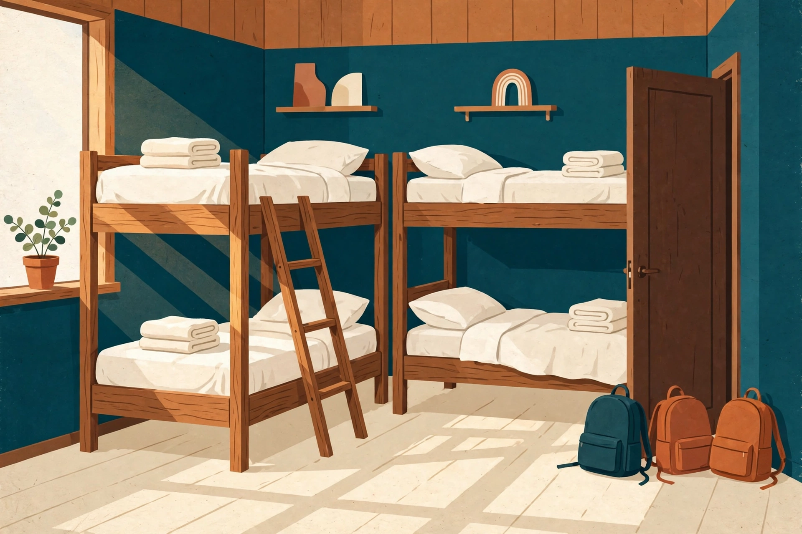
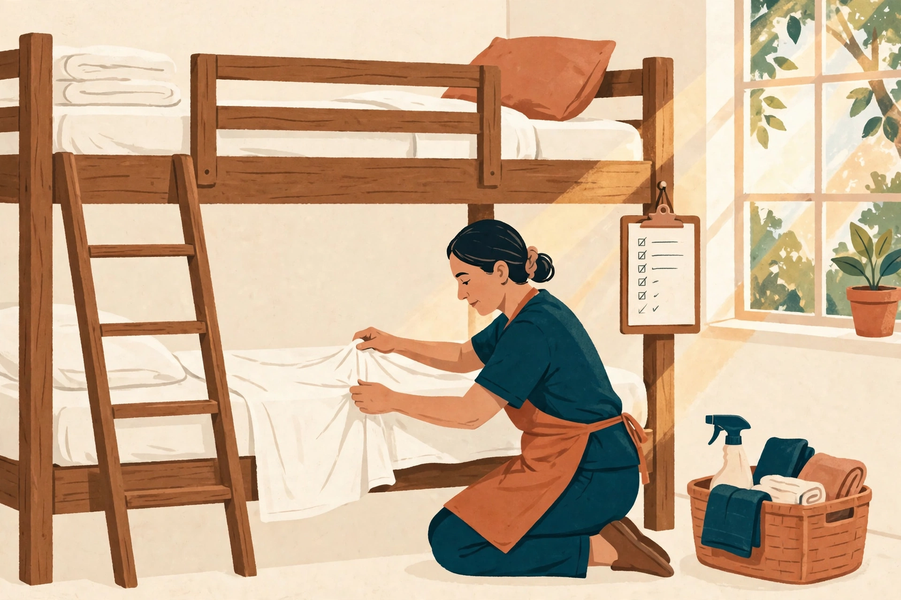

Bad reviews rarely start at the keyboard. They start with a cleaning rota that slips, a bed that wasn't checked, a work-trader nobody trained. Review Rescue reads every review you have, answers the backlog, and fixes the operations causing the complaints — done for you, by someone who has run hostel floors.
Not ready to buy anything? Send me your Hostelworld or Booking.com listing link and I'll reply within 2 business days with your 3 most repeated complaint themes, your weakest category score, and the operational cause I'd bet is behind it. Free, no pitch attached — I'm testing this service on real hostels.
Secure checkout via Square.
Secure checkout via Square.
Secure checkout via Square — at checkout, choose the Subscription — Monthly option for monthly billing.
Not sure yet? Start with the free guide: The Hostel Guest-Experience Playbook — the bed-bug protocol, the anti-overbooking roster, and the work-trader system, free.

1. You buy the Audit and give me view access to your listings (or export your reviews — your call). 2. Within 7 days you get the full picture: what's hurting the score and exactly what to fix first. 3. If you want it done for you, the Sprint clears the backlog and installs the fixes. 4. Thirty days later we re-measure together. I report what moved — honestly, no promised numbers.

It can — and if all you need is replies, buy the software; it's good. Software writes replies. It doesn't rebuild your cleaning rota, train your work-traders, or find out why cleanliness scores 6.8. Review Rescue is the done-for-you version, aimed at the cause.
Do you guarantee my rating goes up?No — anyone who guarantees that is selling you something. I guarantee the work: every review read, the backlog answered, the fixes installed, and an honest before-and-after report.
Who are you?Jared Fontaine. I worked 10+ hostels across the US and Europe — ran housekeeping and a work-trader team in Maui, was assistant manager at a Hawaii hostel where my booking-roster system cut overbookings 30%. Today I do customer-experience work professionally for e-commerce brands. This is the hostel version of that work.
Do you need to visit my hostel?No. Everything runs remotely from your reviews, listings, photos and a call with you.